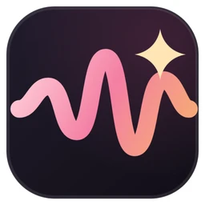

01
Faire lire tes textes avec ta voix
Un enregistrement propre de ta voix, ton texte, et c'est ta voix qui le lit : fini les dix prises pour une voix off.
Extrait de ta voix→Ton texte→Audio

Clone ta voix, double tes vidéos et dicte tes textes : comme ElevenLabs, mais sur ton PC.

VoiceStudio se présente comme l'alternative open source et 100 % locale à ElevenLabs. Il clone une voix à partir d'un enregistrement propre, crée une voix à partir d'une description, double des vidéos dans une autre langue, fait la dictée, la transcription et les livres audio, dans 646 langues. Le moteur par défaut s'appuie sur OmniVoice (k2-fsa), et des dizaines d'autres modèles s'ajoutent depuis le gestionnaire de modèles. Les voix de RepoPop sont générées avec VoiceStudio.
Windows 10/11 (une commande PowerShell ou un installateur .exe), Mac Apple Silicon (Homebrew ou DMG), Linux (AUR, DEB, Snap, AppImage). Une carte NVIDIA ou un Mac Apple Silicon va beaucoup plus vite ; sans carte graphique, ça marche sur le processeur, plus lentement.
RecommandéImages CPU, NVIDIA CUDA et AMD ROCm. L'exemple officiel écoute seulement sur 127.0.0.1:3900 et demande une clé d'API. Pratique pour l'API locale et les automatisations ; sans carte graphique, un NAS sera lent.
Pour automatiserAndroid 10+ et iOS/iPadOS 17+, sur l'appareil et hors ligne une fois les modèles téléchargés. Versions marquées « aperçu » : à tester, pas encore pour travailler.
En aperçuUn enregistrement propre de ta voix, ton texte, et c'est ta voix qui le lit : fini les dix prises pour une voix off.
VoiceStudio traduit et double la vidéo, avec une parole calée sur le rythme de l'original.
Un petit widget flottant transcrit ce que tu dis, en local, dans n'importe quelle appli.
Narration de longs textes et file d'attente de tâches : tu lances, il travaille pendant que tu fais autre chose.
API locale, serveur MCP, ligne de commande et dossiers surveillés : c'est comme ça que les voix de RepoPop sont générées.
Projet sous AGPL-3.0, très actif et très suivi, qui tourne sans compte sur ta machine. À surveiller : sa jeunesse, l'offre Pro fermée à côté de la version libre, et les licences propres à chaque modèle.
Près de 7 500 commits sur la branche principale et des mises à jour en continu.
GitHub affichait environ 107 600 étoiles et 11 900 forks lors de la vérification ; la vidéo arrondit à plus de 100 000.
Tout tourne en local, sans compte ; les modèles ne se téléchargent qu'après ton accord.
Gratuit sous AGPL-3.0, mais une offre Pro fermée et payante vend la licence commerciale pour le travail client ; les modèles ont leurs propres licences.
Lancé en 2026 : applis mobiles en aperçu, AMD et Windows sur ARM expérimentaux, changement d'application après la 0.5.3.
Comment on note : 5 critères notés sur 5, vérifiés sur GitHub, le README officiel et des articles publiés le 13 novembre 2026. La note sur 10 est la moyenne ramenée sur 10.
Bon pour : Cloner ta voix, doubler et dicter sans abonnement
Bon pour : La meilleure qualité, sans rien installer
Bon pour : Voix off prêtes à l'emploi pour vidéos et formations
Bon pour : Transformer un enregistrement dans une autre voix (RVC)
Cloner la voix de quelqu'un sans son accord est interdit par VoiceStudio et peut être illégal : utilise ta voix ou une voix autorisée.

Chaque vidéo RepoPop t'explique un dépôt GitHub utile en moins d'une minute, avec son kit comme celui-ci.